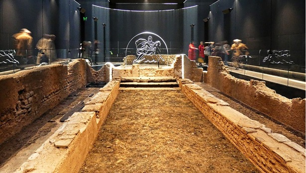
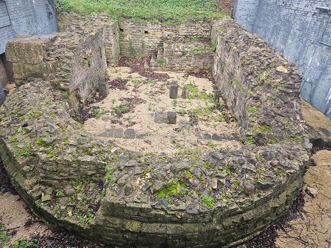
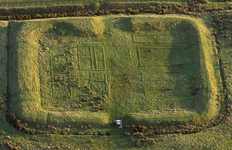
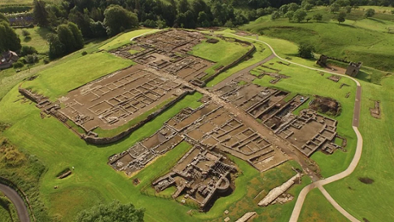
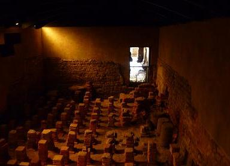
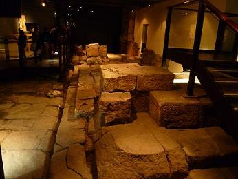

La Britania Romana
Inglaterra-Gales-Escocia
De la Época del Bronce destaca el monumento megalítico de Stonehenge. La Britania prerromana estaba habitada por los Pictos y los Celtas. En el año 55 a.e.c Julio César invade la isla de Gran Bretaña, y regresa al año siguiente concediendo a sus habitantes, la libertad bajo la fidelidad al Imperio Romano, los britanos conservaron su libertad política y pagaron tributo a Roma durante casi un siglo, hasta que el emperador romano Claudio, inicia la conquista total de Britania en el 43. En el año 61 Britania se convirtió en provincia de Roma.
Tras la revuelta del 115 el emperador Adriano visitó Britania en el 122 y comenzó la construcción de una muralla de 117km, que se extendía desde el estuario de Salway, en el mar de Irlanda, hasta la desembocadura del río Tyne. Aún se conservan fragmentos de este muro, conocido como, El Muro de Adriano. Veinte años más tarde, se construyó otra línea defensiva, llamada la muralla de Antonino, en la parte más estrecha de la isla, desde el estuario de Forth al estuario de Clyde.
A finales del siglo III, el Ejército romano comenzó a retirarse de Britania para defender otras partes del Imperio. En el 410, cuando los visigodos invaden Roma, la última legión romana abandona la isla.
INGLATERRA
El Muro de Adriano
El muro tenia una longitud de 80 millas romanas y una altura de 4,5 metros
hasta el terraplén, con un parapeto y "merlons" de 1,8 metros adicionales.
El ancho del muro varía desde los 1,8 metros hasta los tres en las partes
más anchas. El foso frontal del muro era de unos 8,1 metros de ancho de
media, con una profundidad de unos 2,7 metros.
El Vallum media unos 2,4 metros de ancho en el fondo y 6 en la parte
superior, con unos 3 metros de profundidad. La "upcast" se apilaba en dos
montículos a cada lado del foso. Cada montículo era de 6 metros de ancho y
1.8 metros de alto con "revetments" de césped colocados de tal forma que
había una distancia de 30 metros de cima a cima. El Vallum sólo se podía
cruzar por los fuertes donde había puentes de 6 metros de largo con puertas
de arcos de piedra. Los castillos se situaban a una milla uno del otro.
Dentro de los castillos estaba el barracón para la guarnición de 20 hombres,
el otro para repuestos y equipo, unas escaleras comunicaban con la parte
superior del muro.
Entre los castillos se situaban dos torres, a una distancia de 492 metros de
cada castillo. Se construyó una carretera que unía los castillos.
Se construyeron 17 fuertes a lo largo del trayecto. Se construyeron en las
ciudades, desde el Mar del Norte: South Shields (Arbeia), Wallsend (Segedunum),
Newcastle (Pons Aelius), Benwell (Condercum), Rudchester (Vindovala), Halton
Chesters (Onnum), Chesters (Cilurnum), Carrawburgh (Brocolitia), Houesteads
(Vercovicium), Great Chesters (Aesica), Carvoran (Magnis), Birdoswald (Banna),
Castlesteads (Camboglanna), Stanwix (Uxelodunum), Burgh - by - Sands (Aballava),
Drumburgh (Congavata) y Bowness (Maia).
Los Campamentos de la costa Sajona
A lo largo de la costa
sureste de Inglaterra se localizan una serie de campamentos romanos, los
Notitia Dignatarium. Son nueve campamentos romanos con sus unidades
militares, construidos a finales del siglo III.
Londinium Augusta
El Londres romano data del siglo I a.e.c. al IV. De esta época se conservan
gran número de piezas como utensilios de escritura, de cocina, alfarería,
etc. Los textos que nos hablan de Londinum se deben al historiador romano
Tacitus, y Tertuliano que menciona a los cristianos británicos.
El geográfico Claudius Ptolemaeus , que nombra a la ciudad de Londinium
,vide infra y el Tamesa Aestuariu, el estuario de Thames. Pero el texto que
describe la localización de Londinium es el itinerario de Antonino.
El significado del nombre de Londinium parece indicar el lugar que
pertenecía a un hombre llamó a Londinios o que proviene de las palabras
celtas LLYN (lago) y DIN (fortificación).
Los romanos fundaron Londinium en el año 43, en lo que actualmente es la «square
mile» de la ciudad, que es el corazón de los negocios de la capital. También
construyeron el primer puente de Londres sobre el Támesis y fue el único
puente sobre el río hasta 1749.
Los restos del campamento de Claudio fueron encontrados en la calle de Fenchurch y Place de duque.
Los restos del anfiteatro romano musealizados, originariamente en madera
data aproximadamente del año 70 y en el siglo II fue reconstruido en piedra,
con una capacidad para unos 8.000 espectadores.
Se tiene constancia de tres de las legiones que pasaron por Londres, la
segunda Augusta que se atestigua en un altar dedicado al dios Mitras, cerca
del banco de Inglaterra y en dos piedras sepulcrales, la vigésima legión, y
la sexta victorioso se menciona solamente en una sola inscripción
funeraria.
En febrero de 2022, cerca del Puente de Londres, donde se alza el Shard, un
equipo de arqueólogos ha llevado a cabo el descubrimiento de: un enorme
mosaico romano datado entre finales del siglo II y principios del siglo III.
En el London Mithraeum Bloomberg SPACE podemos ver el Templo Romano de
Mitra. Foto:
roman-britain.co.uk

Lincoln
Antigua ciudad Celta. Los
romanos conquistaron el Lincolnshire en el año 48 a.e.c. y poco después
construyeron un campamento. La fortaleza se ubicaba en el extremo norte de
la calzada romana conocida como Fosse Way, que unía Lincoln con Exeter a
través de Leicester y Bath, empalmando con la Ermine Street que unía Londres
con York. Lincoln representaba una posición ideal. Cuando la legión fue
trasladada a en el año 71, el campamento se convirtió en una nueva ciudad,
Colonia Domitiana Lindensium en honor a su fundador, el emperador Domiciano.
Destaca la Newport Arch, la puerta norte de la muralla romana, único arco
romano del Reino Unido bajo es cual aún circula el tráfico.
Roman East Gate. La torre de la Puerta Este romana y la
muralla adyacente de la ciudad romana superior se pueden ver en la explanada
del Hotel Lincoln. La Puerta Este romana data del siglo III. Preguntar en
recepción del hotel para acceder.

York
La ciudad fue fundada como Eboracum en el año 71 por los romanos y la convirtieron en una de las dos capitales de la Britania romana. El Imperio romano fue gobernado desde York por Septimio Severo durante un periodo de dos años.

Chesterholm
En Chesterholmen, el condado de Northumberland, se localiza el campamento
romano de Vindolanda, al sur de Muralla de Adriano en el norte de
Inglaterra, cerca de la frontera con Escocia. Aquí estaban acampados las
tropas auxiliares y de caballería. Famoso por sus "cartas" escritas en
tablillas de madera. Fue construido en el año 85. Vindolanda es uno de los
fuertes militares mejor conservados del Imperio romano. Destacan los objetos
encontrados allí como diversos tipos de calzado, vestimentas de cuero, un
inodoro de madera,....Foto: The
Vindolanda Trust

Bath, las termas romanas
Ubicada a una hora y media de Londres. La ciudad de Bath fue fundada por los romanos durante el siglo I, alrededor del manantial consagrado a la diosa del agua Sulis Minerva. La temperatura del agua es de unos 46 grados centígrados. Los romanos llamaban a las termas Aquae Sulis. Se puede visitar el templo erigido en honor a la diosa romana Sulis Minerva, ubicado casi al frente del manantial que alimenta a los baños romanos. Se conserva el sistema a través del cual se purificaban las aguas de sedimentos y las estancias de los baños.
|
 |
 |
 |
Verulamium
Verulamium era la tercera más importante de la Britania. Sus restos se encuentran junto a la actual ciudad de Saint Albans en el condado de Hertfordshire. La colonia romana obtuvo el rango de municipium alrededor del año 50. Verulamium creció hasta convertirse en una ciudad importante. Los principales edificios de la ciudad quedaron destruidos en dos incendios ocurridos en la ciudad, el primero en el año 155 y el segundo alrededor del año 250. La ciudad fue reconstruida al menos dos veces en los siguientes 150 años. Los restos visibles de la ciudad romana son escasos, sólo algunas partes de la muralla de la ciudad y el teatro.
Scarborough
En abril de 2021, En Scarborough las
excavaciones revelan un conjunto de edificios que podría ser «el primero de
este tipo en ser hallado dentro de todo el antiguo Imperio Romano»
Las excavaciones revelaron un gran complejo de edificios, que incluía una
sala central circular con una serie de habitaciones a la entrada, así como
una casa de baños. Los arqueólogos creen que podría ser una villa romana de
lujo o un santuario religioso, o quizá una combinación de ambos.
Blackgrounds
En Blackgrounds, en el sur del condado de Northampton, en enero de 2022, los arqueólogos han procedido a la excavación de un antiguo poblado de la Edad del Hierro que con el tiempo, y al parecer gracias a una importante actividad comercial, acabó convertido en una próspera y bulliciosa ciudad romana. En la Edad del Hierro cuando era un asentamiento formado por unas 30 casas circulares. Una calzada romana de diez metros de ancho atraviesa el yacimiento, también se han recuperado más de trescientas monedas romanas, objetos decorativos,...
Bedfordshire
En mayo de 2020 en Bedfordshire, debajo de una carretera, se ha descubierto una antigua cervecería romana y un taller de cerámica, completamente cubiertos por la tierra. Un equipo de arqueólogos del Museo de Arqueología de Londres (MOLA) encontró una serie de vasijas que fácilmente podrían ser vasos antiguos y un horno secar granos. La presencia de objetos como pesos, monedas y un anillo de plata, demuestran que en el lugar se realizaban intercambios comerciales, trajo al yacimiento ánforas de aceite del sur de Hispania y cerámica de mesa importada de la Galia. Se trataba así de un próspero centro industrial, que alcanzó su apogeo en el siglo IV.
GALES
La actual Gales formaba parte de la Britania. De época romana destacamos:
En Brecon el campamento romano. Caerleon con su Museo Nacional de la Legión Romana, el campamento romano de Iscar, anfiteatro y el Museo Nacional de las Termas Romanas. En Caernarfon el campamento romano de Segontium y en Caerwent las murallas, el foro y la basílica romana.
ESCOCIA
Los romanos denominaron a estas tierras habitadas por los Pictos con el nombre de Caledonia. Destaca el Muro de Antonino y los fuertes asociados al muro. Construido en el año 142 por orden del emperador Antonino Pío para proteger la frontera superior del Imperio en Britannia. Destacamos el fuerte romano de Ardoch, los de Cramond, el muro Antonino en Falkirk...
En noviembre de2023, la calzada romana «más importante de la historia de Escocia» ha sido encontrada en el jardín de una casa de campo ubicada a pocos kilómetros al oeste del centro de la ciudad de Stirling y junto al Puente Viejo Colgante del siglo XVIII. Construida alrededor del siglo I por los ejércitos romanos del general Julio Agrícola.
Yacimientos romanos en Gran Bretaña (roman-britain.co.uk)